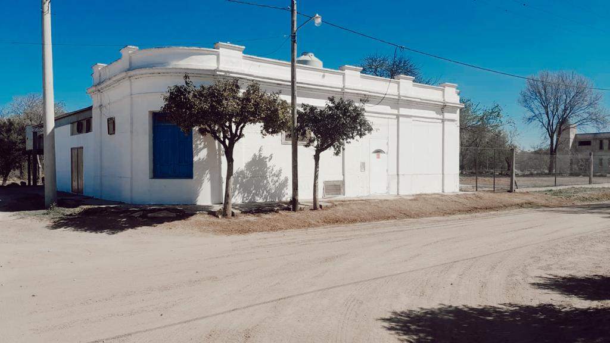
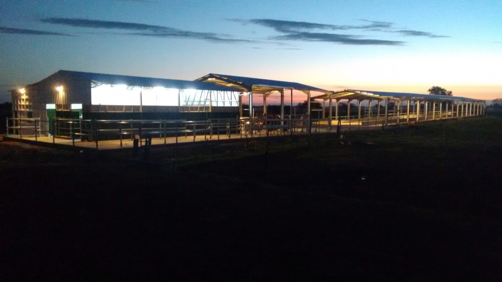

Nuestra Fabrica
Nuestras instalaciones se encuentran en el centro del pueblo, con un sector de produccion y dos sectores de almacenamiento
Nuestro Tambo
En el tambo se produce se trabaja con bovinos raza Holanda Argentino que producen la leche para nuestros lacteos
